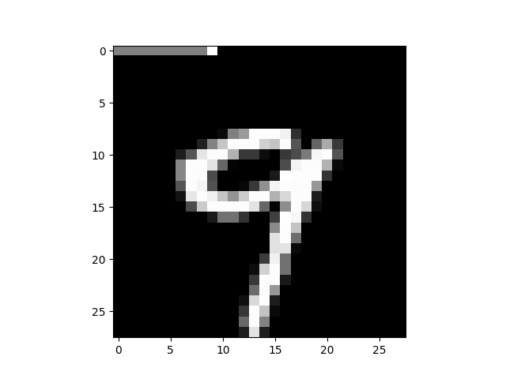
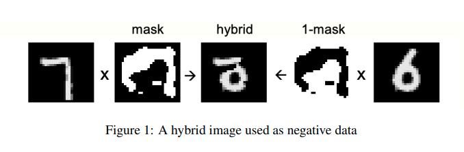
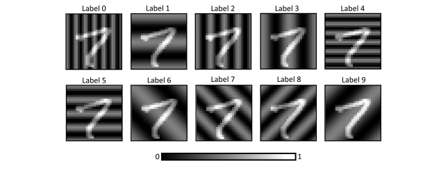
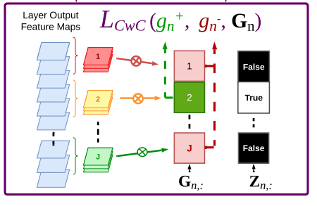
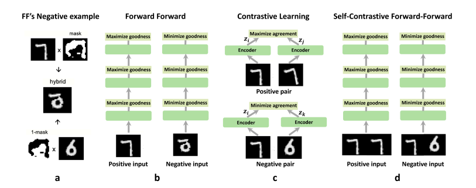

Forward-Forward 算法：Geoffrey Hinton 带来的新革命
在 74 岁高龄时，Geoffrey Hinton 提出了一个用来取代反向传播（Backpropagation）的新算法——而反向传播正是他在 1986 年大力推广的技术。这个算法试图让深度学习更接近“生物可解释”的学习方式。本文算是对他的致敬，也记录我对这篇工作以及后续一些进展的理解。
“于是他说：‘要有一条新路’， Forward-Forward 算法便由此诞生，用以取代他在 1986 年赐予世人的反向传播。而这一切，是好的。” —— Hinton 的顿悟：深度学习的新纪元（我瞎编的）
前置背景：前向-反向（Forward-Backward）方式的问题
当今绝大多数神经网络都使用反向传播（Backpropagation，简称 BP）来优化参数。这一方法极其成功，但它也有一些天生的局限，某种程度上限制了我们对智能的想象空间。这也是 Hinton 和很多研究者想要寻找新方法的动机。
这些局限是什么？
-
首先，BP 依赖链式法则来计算梯度，这要求前向计算图是完全可微、可展开的，不能有真正意义上的“黑盒”过程。
-
其次，从理想化的角度看，智能体的学习应该是“连续”的。例如，一个机器人在现实世界中观察、行动，每一帧感知、每一个动作都应即时参与学习，而不是“先观察一段时间，再暂停下来统一做一次反向传播”。
-
最后也是最关键的一点：BP 很难被视为一种“生物可行的学习机制”。几乎没人相信大脑中真的存在一个从高层往低层、逐层精确传播误差信号的过程。以 BPTT（通过时间的反向传播）为例，大模型训练时会在计算图上沿时间轴回溯，这种“逆时间传播”的过程显然不太可能是生物系统的真实机制。
-
当然，BP 的缺点远不止这些。但只要意识到 BP 并不完美，我们就有理由去看看别的可能性。
Forward-Forward 算法的基本思想
Forward-Forward（FF）算法的训练过程可以拆成两个交替进行的阶段：正相学习（positive phase） 和 负相学习（negative phase）。训练时不断交替执行：正相 → 负相 → 正相 → 负相 ……
在 FF 中，每一层都会计算一个称为 goodness 的量，一般定义为输出的均方：
goodness = mean( \(y^2\) )
A. 损失函数
在正相学习中，我们希望“拉高” goodness，对应的损失可以写成：
$$ \mathcal{L}_{pos} = \log (1 + \theta - y^2) $$
其中 \(y\) 是每一层的输出，\(\theta\) 是超参数。
在负相学习中，我们希望“压低” goodness，对应的损失为：
$$ \mathcal{L}_{neg} = \log (1 - \theta + y^2) $$
直观上，正相让网络偏好“好”的输入（事实），负相让网络远离“坏”的输入（幻觉）。
B. 数据构造：Fact 与 Delusion
在正相中，我们输入 事实（fact）；在负相中，我们输入 幻觉（delusion）。
- fact：真实数据或“正确标注”的样本；
- delusion：打乱、拼接，或由生成模型产生的“伪样本”。
以一个简单的 MNIST 分类任务为例，原论文中做法是：把标签 one-hot 编码后的 10 维向量，映射到图像的前 10 个像素上。
- 正相（fact）：图像 + 正确标签映射；
- 负相（delusion）：图像 + 随机标签映射。

在无监督场景中，可以把“原图像”视为 fact，把“两张不同图像的拼接”视为 delusion：

对于 RNN 或语言模型，正相阶段输入真实语料；在若干步正相更新后，让模型自己生成一段文本，用作负相阶段的输入。
C. 推理过程
推理时，网络会对不同候选（例如不同标签或不同输入）分别计算各层的 goodness，然后选取总 goodness 最大的那个结果作为输出。这有点像“哪种解释让网络最舒服（能量最低）”。
D. 生物学类比
FF 很吸引人的一点在于它和某些“脑科学叙事”天然契合。Hinton 提到，可以把：
- 白天清醒、感知真实世界的过程，看作 正相学习：大脑接收现实输入，把它当作“事实”；
- 夜晚做梦、重放记忆、整理经验的过程，看作 负相学习：大脑对内部生成的想象或重放进行“修正”。
这个类比是否真的准确、是否经得起神经科学检验，见仁见智。但作为一种启发，它非常有趣。
E. 局限性
原始论文主要在多层感知机（MLP）上做实验。当我把监督版 FF 直接搬到 CNN 上时，结果（意料之中地）失败了：
原因在于，标签信息被当作“边缘像素”拼在输入上，在卷积堆叠后逐渐被抹掉。既然正负相之间唯一的区别在于那部分标签信息，一旦它在卷积中消失，模型就完全分不清 fact 与 delusion 了，训练自然崩溃。
要让 FF 在更复杂架构上发挥作用，我们需要更巧妙的负样本构造方式。
一些后续工作的进展
A. 《Training Convolutional Neural Networks with the Forward-Forward Algorithm》
这篇工作提出了一个更自然的负样本构造思路：
- 不再用 1D 的 one-hot 标签，而是构造与图像同尺寸的 2D 标签条纹（strips）；
- 不同类别对应不同条纹模式，把它们“叠加”到图像上；
- 由于这些条纹贯穿整个空间维度，不再是边缘上的少量像素，因此不会在卷积过程中轻易消失。
理论上，这样 CNN 就能“看到”标签信息，从而在 FF 框架下得到更好的表现。
不过，我在 CIFAR-10 / CIFAR-100 上复现实验时，感觉效果并没有论文中那么亮眼（作者也没有公开代码，所以不能完全排除我实现有问题）。

B. 《Convolutional Channel-wise Competitive Learning for the Forward-Forward Algorithm》
这篇工作重新实现了 FF，并对标签使用方式进行了大改造：
- 还记得正相要拉高 goodness、负相要压低 goodness 吗？
- 这里作者把两者合并在一起：
- 把每一层输出按通道方向平均分成
num_classes份； - 与真实标签对应的那一份被“拉高” goodness；
- 其它部分则被“压低” goodness。
伪代码大概是这样：
output = layer(input) # [C, H, W]
channel_size = output.shape[0]
channel_part = torch.split(
output,
channel_size // num_of_classes,
dim=0, # 按通道维度切分
)
loss_pos = torch.exp(1 + theta - channel_part[label].pow(2).mean())
loss_neg = torch.exp(1 - theta + channel_part[others].pow(2).mean())
直观上，它把“每一层”都当成一个小分类器。实验证明，在 CIFAR-10 上可以取得大约 79% 的精度。
但问题也很明显：
- 它几乎只能用于图像分类，
- 类别数量也不能太大，
- 且训练过程强烈依赖标签划分，
这让它很难推广到诸如持续学习等更多样的场景，也在一定程度上破坏了 FF 原本那种“更偏特征学习 / 表征学习”的味道。

C. Self-Contrastive Forward-Forward Algorithm

这篇工作提出了一个“自对比（self-contrastive）”版本的 FF：
- 输入两张图像；
- 若两张图像相同，则最大化 goodness；
- 若不同，则最小化 goodness。
目前论文还在 preprint 阶段，没有公开代码，我个人在复现时也没有成功，所以在此不做太多评价。
参考文献
The Forward-Forward Algorithm: Some Preliminary Investigations
Training Convolutional Neural Networks with the Forward-Forward Algorithm
Convolutional Channel-wise Competitive Learning for the Forward-Forward Algorithm
Self-Contrastive Forward-Forward Algorithm
Geoffrey Hinton Unpacks The Forward-Forward Algorithm [YouTube 视频：链接]